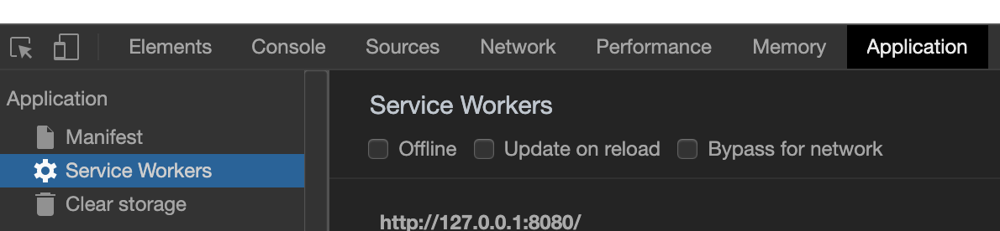
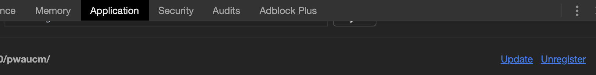
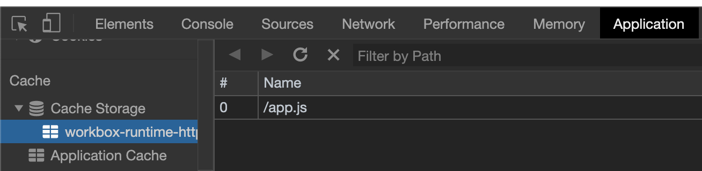
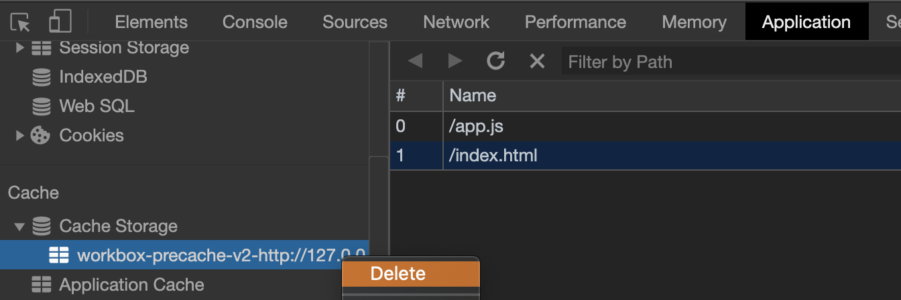
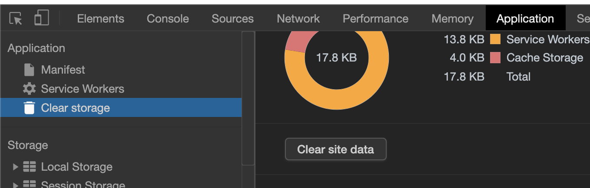
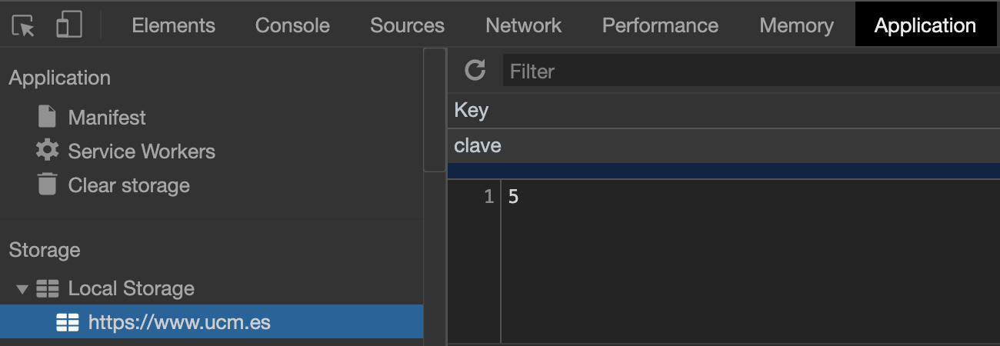
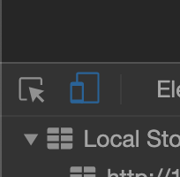
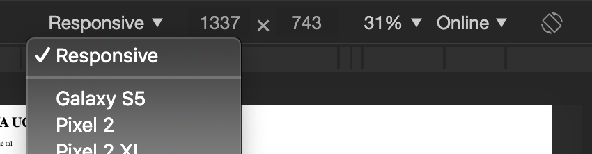

Progressive Web Apps
Carlos León
cleon@ucm.es
Qué es una PWA
Son aplicaciones web (HTML, JS, CSS), pero con ciertas cosas especiales que permiten:
- Funcionar sin conexión
- Usar notificaciones nativas
- Acceder al hardware del dispositivo
- Instalarse fácilmente
- Almacenamiento local
Aunque sean, técnicamente, una página web, reemplazan a las aplicaciones nativas
Además, el mismo código nos vale para una aplicación en escritorio, móvil y web
¿Por qué "progressive"?
Son "progresivas" porque se diseñan con la estrategia de "mejorado progresivo"
El mejorado progresive consiste en diseñar un núcleo básico fundamental (contenido y estructura básica), e ir añadiendo capas de funcionalidad sobre ese núcleo
Por ejemplo, una PWA bien hecha funcionará sin conexión en navegadores nuevos, y sin conexión en los viejos, pero aún así podrá verse su contenido
Para hacer una PWA sencilla, sólo hay que hacer una página web (aplicación), y añadir ciertas cosas
Manifest
El manifiesto es un archivo de texto con datos (JSON) que describe nuestra aplicación progresiva
Cuando hay un archivo manifest.json (o como le queramos llamar)
apuntado por nuestro index.html, el navegador sabrá que tenemos una
PWA
{
"short_name": "Nombre corto",
"name": "Nombre largo de mi aplicación chula",
"description": "La mejor PWA que existe",
"icons": [ ],
"start_url": "/",
"background_color": "#26AF31",
"display": "standalone",
"scope": "/",
}
Es importante declarar el "manifest" en index.html:
<link rel="manifest" href="manifest.json">
Para que en el móvil se vea como una aplicación "nativa" en vez de como
una pestaña de navegador, añadimos esto a manifest.json:
{ "display": "standalone" }
Service Workers
Son scripts que se ejecutan en navegador, independientemente de una página web
No tienen acceso al DOM (porque no tienen acceso a una página)
Sólo funcionan con HTTPS
(Pero nos deja funcionar sin HTTPS cuando el dominio es localhost)
"Application" 
Gracias a la tecnología de service workers, podemos instalar uno desde nuestra página web
(Para esto, obviamente, necesitamos haber accedido a nuestra página por primera vez)
Cuando el service worker esté instalado, el navegador recordará que hay uno en nuestro dominio (la raíz de la URL), y lo usará cuando volvamos a intentar acceder a ese dominio
Aunque estemos sin conexión
Instalar un service worker
Para instalar un service worker, sólo hay que ejecutar algo de código
JavaScript en nuestro index.html
<head>
<script>
// si nuestro navegador ejecuta service workers
if ('serviceWorker' in navigator) {
window.addEventListener('load', () => {
navigator.serviceWorker.register('sw.js').then(reg => {
console.log('Todo bien:', reg)
}, function (err) {
console.log('Fallo:', err)
})
})
}
</script>
</head>
En el código anterior, nuestro service worker estará en sw.js (lo
veremos un poco más adelante)
Borrar service
"Unregister" 
Cache de archivos
A través de un service worker, podemos acceder al almacenamiento de cache del navegador
Aquí podremos almacenar archivos (index.html, app.js, dude.png,
fondo.css), que estarán disponibles para acceso, independientemente
del estado de la conexión
En un almacenamiento local al navegador, lo que quiere decir que si vamos a otro navegador (o a otro ordenador), no estarán los archivos ahí

Figura 1: Podemos ver qué recursos se han almacenado en la cache
Borrar datos de la cache
para forzar una recarga 
¡Borrar todo!
Clear site data

Caching
Para tener una aplicación web que funcione sin conexión, simplemente guardaremos los archivos en una cache
Después, tendremos un service worker que almacene los archivos, y los recupere cuando volvamos a una URL
Y, cuando haya una versión nueva de los archivos (sólo lo sabremos cuando estemos conectados) que actualice la cache
Para hacer el caching de archivos, y luego acceder a ellos, podríamos usar la API de service workers
Pero vamos a usar
workbox, que es
una librería que nos ahorra casi todo el trabajo con los service workers
Con workbox, es fácil activar la cache de archivos:
Ejemplo de archivo sw.js:
importScripts('https://storage.googleapis.com/workbox-cdn/releases/5.1.2/workbox-sw.js')
console.log(`Workbox ${workbox ? 'sí' : 'no'} está funcionando`)
workbox.precaching.precacheAndRoute([
{url: '/index.html', revision: null },
{url: '/app.js', revision: null},
])
Revisiones
Vemos que hemos puesto {revision: null}
Esto quiere decir que no hay información de revisión, y que la cache no se actualizará cuando haya modificaciones
En workbox, esta información de revisiones es necesaria para que el
navegador reconozca qué archivos han cambiado
Pero mantener el número de revisión a mano es un trabajo tedioso
workbox-cli
workbox ofrece una aplicación de línea de comandos que se encargará de
gestionar el valor de revision
Instalamos node.js (versión más nueva que haya):
# Iniciamos el proyecto node.js
npm init --yes
Instalamos workbox-cli:
# en el directorio del proyecto
npm install -D workbox-cli
Iniciamos el asistente de gestión de las revisiones:
# en el directorio del proyecto
npx workbox wizard
Con esto, dejando las opciones por defecto, nos creará un archivo
sw.js (podemos cambiarle el nombre)
Este archivo reemplaza al que habíamos hecho a mano (así que no hay que hacerlo)
Este archivo sw.js tiene nuestro nuevo service worker, que gestiona el
cache y las revisiones
Así, cuando hagamos cambios, la revisión cambiará y el navegador recargará el recurso
Hay que llamar a este comando cada vez que hagamos cambios
# Para regenerar una versión, simplemente usamos la herramienta
# Esto asume que nuestra configuración se llama `workbox-config.js`
npx workbox generateSW
Si hacemos un cambio, pero no regeramos el SW, no se recargará en el navegador
En resumen:
# Instalar node.js (que viene con `npm`)
cd ruta_a_la_carpeta_de_mi_proyecto
npm init --yes
npm install -D workbox-cli
npx workbox wizard
# Repetir cada vez que haya cambios:
npx workbox generateSW
Ciclo de trabajo
Tener que ejecutar generateSW cada vez que hacemos algo para probar es
tedioso
Una solución es desarrollar nuestra app como una aplicación web sin service workers, y desplegarla cuando sea necesario
Así es mucho más rápido
Para eso, podemos tener:
- un
index.htmlque haga referencia al service worker - un
devel.htmlque sea igual, pero que no use el service worker
Así, usaremos devel.html en desarrollo, pero desplegaremos con
index.html
App shell
El modelo de desarrollo de "app shell" consiste en hacer caching de todo el núcleo de la aplicación (los HTML, CSS y JS que definen la funcionalidad y la interfaz), y hacer que los datos (que podrían cambiar) se carguen dinámicamente
Almacenamiento local
Las PWA se pueden beneficiar del API de almacenamiento local
Usar localStorage
Existe una variable
localStorage,
que es un objeto que permite guardar y leer valores
Estos valores se mantienen entre sesiones (a diferencia de
sessionStorage),
y cada dominio tiene su propio objeto
Añadir o modificar una clave:
localStorage.setItem('clave', 6)
localStorage.clave = 6
La clave se guarda siempre como string
// para acceder al valor
localStorage.getItem('clave')
localStorage.clave
Borrar:
// borrar una clave
localStorage.removeItem('clave')
// borrar todo
localStorage.clear()

Figura 2: Se puede ver la lista de datos guardados, por dominio
Auditoría con Lighthouse
Chrome incluye un sistema de auditoría de calidad de PWA, Lighthouse
Lighthouse nos emite un informe de la página en la que estamos, dándonos nota a cada apartado
En particular, nos evalúa si la aplicación cumple los estándares de una PWA

Figura 3: Para arrancar la auditoría, sólo hay que seleccionar las opciones y darle al botón
Ver como en un móvil
Para probar la aplicación en un móvil, podemos ir a nuestro dispositivo y cargar la URL (en Chrome, por ejemplo)
Pero Chrome tiene una manera mucho más cómoda, haciendo que podamos ver, en el navegador, la aplicación con el aspecto de un pantalla de móvil o tableta

Figura 4: Podemos ver nuestra PWA como se vería en un dispositivo móvil

Figura 5: Podemos elegir las opciones del dispositivo que estamos simulando